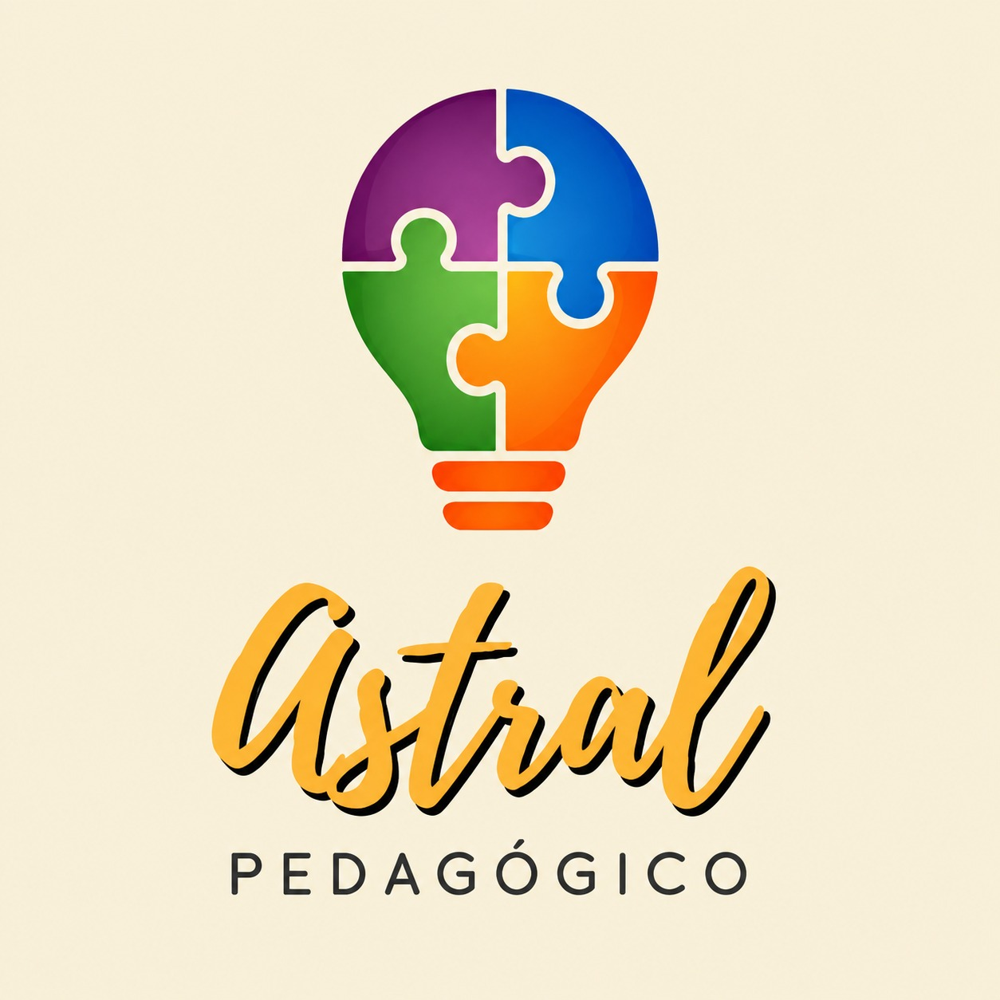
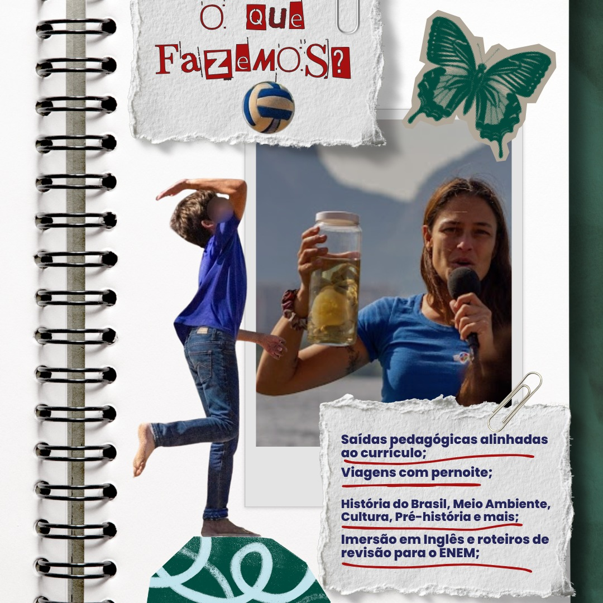

Intenção pedagógica
Roteiros conectados aos objetivos e conteúdos de cada escola.

Astral PedagógicoAprender é viver o conhecimento
Planejamos e organizamos aulas de campo, estudos do meio e projetos pedagógicos que conectam conteúdo, cultura, natureza e descoberta.
Astral Pedagógico
Somos uma empresa do Rio de Janeiro especializada em criar, organizar e coordenar experiências educacionais para escolas. Nossa trajetória começou na década de 1990, unindo duas paixões: crianças e cultura.
Cuidamos do planejamento pedagógico e da operação para que cada saída seja uma oportunidade real de ampliar repertórios e construir novas formas de enxergar o mundo.
Roteiros conectados aos objetivos e conteúdos de cada escola.
Logística, fornecedores e acompanhamento pensados em cada detalhe.
Experiências que transformam lugares, encontros e descobertas em saber.
Projetos autorais
A Astral desenvolve projetos temáticos próprios, com iniciativas ecológicas e culturais em unidades ambientais, prédios históricos e outros espaços que convidam à investigação.
Meio ambiente
Vivências em unidades ambientais que aproximam estudantes dos ecossistemas e da educação ecológica.
Cultura e história
Roteiros por prédios históricos e espaços culturais que transformam patrimônio em experiência.

Em breveUma novidade está chegando
Um projeto para aprender o idioma vivendo novas experiências.
Uma proposta de imersão que amplia o contato com a língua inglesa de forma prática, envolvente e conectada ao mundo real.
Conheça o novo projetoAcompanhe nossos projetos, bastidores e novas experiências pelas redes sociais.